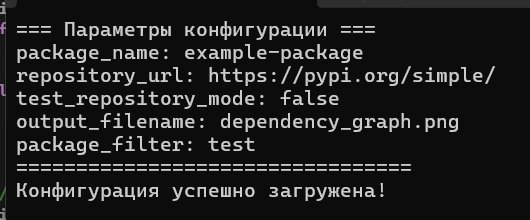
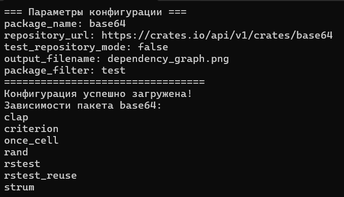

Создание минимального CLI-приложения для визуализации графа зависимостей с настраиваемой конфигурацией через XML-файл.
ConfigLoader - класс предназначенный для загрузки конфигурации: - Загрузка и парсинг XML-конфигурации - Валидация параметров - Обработка ошибок - Вывод параметров в требуемом формате
Все требуемые параметры поддерживаются:
| Параметр | Тип | Обязательный | Описание |
|---|---|---|---|
| package_name | string | Да | Имя анализируемого пакета |
| repository_url | string | Да | URL репозитория или путь к файлу |
| test_repository_mode | boolean | Да | Режим работы с тестовым репозиторием |
| output_filename | string | Да | Имя файла для изображения графа |
| package_filter | string | Нет | Подстрока для фильтрации пакетов |
<?xml version="1.0" encoding="UTF-8"?>
<config>
<package_name>example-package</package_name>
<repository_url>https://pypi.org/simple/</repository_url>
<test_repository_mode>false</test_repository_mode>
<output_filename>dependency_graph.png</output_filename>
<package_filter>test</package_filter>
</config>=== Параметры конфигурации ===
package_name: example-package
repository_url: https://pypi.org/simple/
test_repository_mode: false
output_filename: dependency_graph.png
package_filter: test
=================================
Конфигурация успешно загружена!| Тип ошибки | Сообщение об ошибке | Причина |
|---|---|---|
| Файл не найден | ОШИБКА: Не удалось загрузить файл: |
Указанный файл конфигурации не существует |
| Отсутствует корневой элемент | "ОШИБКА: Ошибка отстутсвует корневой элемент |
В XML файле отсутствует корневой тег <config> |
| Отсутствует обязательное поле | ОШИБКА: Отсутствует обязательное поле package_name |
Обязательный параметр отсутствует или пустой |

Рис. 1: Пример вывода конфигурации
Реализовать основную логику получения данных о зависимостях для их дальнейшего анализа и визуализации без использования менеджеров пакетов и сторонних библиотек для получения информации о зависимостях пакетов.
DependencyParser - класс для получения и обработки данных о зависимостях: - Выполнение HTTP-запросов к API crates.io - Парсинг JSON-ответов - Извлечение информации о зависимостях - Обработка ошибок сетевых запросов и парсинга
CurlParsingError - класс исключений для ошибок CURL
JsonParsingError - класс исключений для ошибок парсинга JSON
https://crates.io/api/v1/crates/{package_name}https://crates.io/api/v1/crates/{package_name}/{version}/dependenciesПри успешном получении данных выводится список прямых зависимостей: bach
Зависимости пакета base64:
clap
criterion
once_cell
rand
rstest
rstest_reuse
strum| Тип ошибки | Класс исключения | Сообщение об ошибке |
|---|---|---|
| Ошибка CURL | CurlParsingError |
Ошибка Curl: {детали ошибки} |
| Ошибка парсинга JSON | JsonParsingError |
JSON ошибка разбора: {детали ошибки} |
| Пакет не найден | JsonParsingError |
JSON ошибка разбора: пакет не найден |
| Отсутствуют зависимости | - | Зависимостей не найдено:( |

Рис. 2: Пример вывода списка зависимостей пакета base64